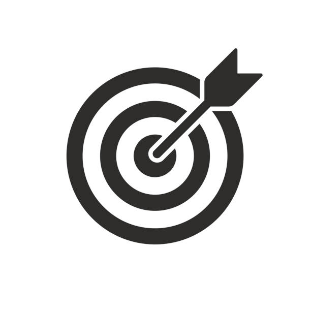

Cirruculum Vitae
Below is a link to my resume You can download the full PDF version by clicking here.
vision and misson statement
I don't have a clear future vision, as I tend to go with the flow. However, I do aspire to be successful by pursuing a career that I'm passionate about, one that brings me joy and fulfillment. While I haven't fully fleshed out my plans, I believe that with faith, determination, and god by my side all things are possible.
Mission
my mission
My mission is to learn more here in college, create connections, and stay driven to work hard so that everything pays off in the long run. Currently, I am not on track to meet the vision I had set for myself. I'm in the process of getting back on track so I can fulfill the goals I've set for my future self. It's not an easy road, with many challenges being faced daily, but I hope to meet my commitments. Furthermore, I also want to gain more knowledge at college, enhance my critical thinking, and develop problem-solving skills.
career Credits

In leaving college my career goal is to be a medical technologist,
A medical technologist is someone that he/she incumbent is responsible for performing a range of routine clinical,
scientific/technical procedures within the specialized department or laboratory to inform and support patient care decisions and treatment;
public health policy decisions, surveillance, monitoring, intervention, and control of communicable and non-communicable disease conditions in the healthcare system,
As you can see its a lot of work but im sure i will be able to manage in the future.
skill and qualification requirement
- Bachelor of Science in Medical Technology from a reputable academic institution
- Licensed Medical Technologist with the Council for Professions Supplementary to Medicine in Jamaica
- Six months minimum internship
Job requirements
- Verify specimen suitability and validate documentation to ensure that it corresponds with the specimen.
- Prepare specimens, reagents, and quality control material for testing procedures.
- Validate the accuracy and precision of laboratory results, using appropriate quality control procedures.
- Participate in external quality assurance program as directed.
- Participate in continuing education.
- Undertake routine testing procedures in the various sections of the specialized department or laboratory, on body fluids including but not limited to blood, urine, stool, sputum, cerebrospinal fluid, peritoneal fluid, pleural fluid, ascites fluid, biopsies, swabs, food and water samples.